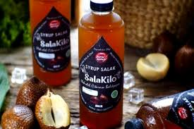

SIRUP SALAK
Bahan-bahan
- 1 KG salak
- 500 gr gula pasir/gula merah
- 3 lembardaun jeruk
- 2 batangkayu manis
- 500 mlair putih
Cara membuat:
- Kupas salak cuci bersih ambil daging buahnya dan Rebus salak dengan air sampai layu
- Saring salak,kemudian blander salak dengan air sisa rebusan
- Kemudian sari salak direbus tambahkan gula, daun jeruk dan kayu manis Masak sampai mengental
- Setelah mengental sirup siap disajikan dengan es batu, simpan sirup ke dalam botol taruh dikulkas